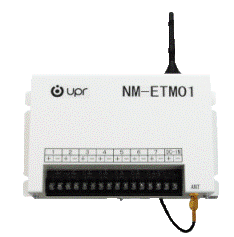
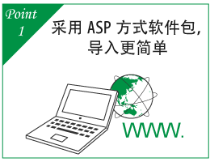
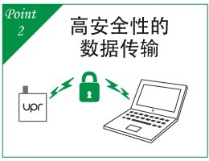
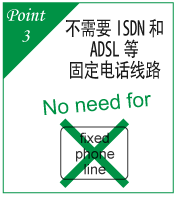
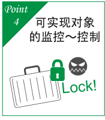
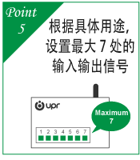
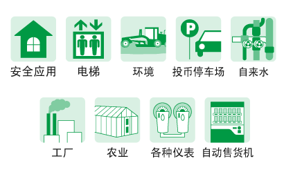

远程监控系统（NANMONI）
对于远程出现的问题，如派遣人员去查看、检查，会受到一定的限制。
「远程监控系统（NANMONI）」是一套远程掌握监控对象状态的解决方案。监控对象发送来的数据全部集中在数据中心，利用计算机即可进行查看。采用ASP方式※1，与自己公司构建系统相比，导入更简单、成本更低廉。
「远程监控系统（NANMONI）」是一套远程掌握监控对象状态的解决方案。监控对象发送来的数据全部集中在数据中心，利用计算机即可进行查看。采用ASP方式※1，与自己公司构建系统相比，导入更简单、成本更低廉。

「A计划」
只针对希望接收紧急通知的客户
 将监控对象的异常信息发送到客户指定的邮件地址。
将监控对象的异常信息发送到客户指定的邮件地址。
「B计划」
只针对希望接收紧急通知、收集定期数据、远程控制设备的客户
 将监控对象的异常信息发送到指定的邮件地址。
将监控对象的异常信息发送到指定的邮件地址。
 可收集管理记录和接点状态等各种数据。
可收集管理记录和接点状态等各种数据。
 通过无电压接点输出，可实现设备的控制功能。
通过无电压接点输出，可实现设备的控制功能。
特长


事例介绍

获得「日本Material Handling大奖 优秀奖」
在涵盖生产网点和物流网点内的原材料、半成品、成品运输的「Material Handling（以下MH）物料搬运」业务方面，「NANTUI」凭借尖端的技术和优秀的研发能力，连续获得日本MH协会授予的「Material Handling大奖 优秀奖」。「NANMONI」的性能获得第三方机构的高度评价。